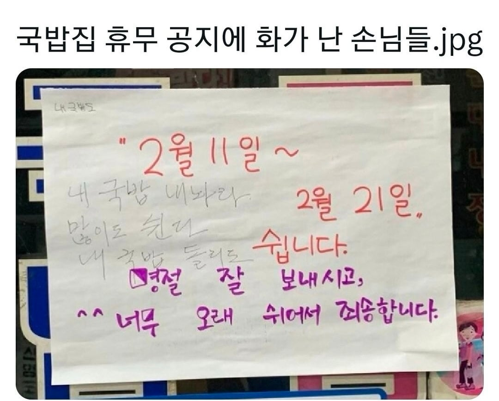

이거 있을 줄 알았다 ㅋㅋㅋㅋ
구석에 내 국밥도 ㅋㅋㅋㅋㅋㅋ
와 근데 진짜 오래 쉬네 ㅋㅋ
ㅋㅋ빡치는상황이긴해
다른국밥집은싫다고ㅋㅋ
국밥은 중대사안이지
왜 화가 났어 하고 보니 진짜 많이 쉬네ㅋㅋㅋㅋㅋ
왼쪽 위에 "내국밥도"가 포인트
아 ㅋㅋㅋ 이건 못봤다.
명절 10일 휴가는 드문데ㄷㄷㄷ
씨 무슨 열흘이나 쉬나
맛집인갑네ㅋㅋ
뭐 해외여행이라도 가나보네 ㅋㅋ
커엽 ㅋㅋㅋ

쭉 달려오시다가 10년만에 쉴수도있지......
날짜 안보고 명절 휴간데 너무하네 싶다가
10일이라니까 아 ㅇㅈ 소리 나오네ㅋㅋㅋ
맛있긴한가보네
얼마나 맛있길래
아 1일 1국밥 해야한다고1!
맛집인가보다 ㅋㅋㅋㅋㅋㅋㅋ
맛집이구나
끼아아아악
내 국밥 도
내국밥 포함 이라는 건가
내국밥 달라는 건가
약간 의심병이 들었나 왜케 ai같지
다음에도 예고없이 오래 쉬면 가게는 죽소
얼마나 맛있었으면 ㅋㅋ
맛집이긴 한가보다 ㅋㅋㅋ
2월에 10일 쉬면 매출 삼분의일은 날라가는 거 아닌가 건물주가 장사하는 건가
월 천 벌다가 월 오백만 벌지 뭐..
하는 느낌일지도 모르지.
내 국밥 돌리도
ㅋㅋㅋㅋㅋㅋㅋㅋㅋㅋㅋ
존나 맛있는 집인가
국밥내놔
이게 왜 니 국밥이야